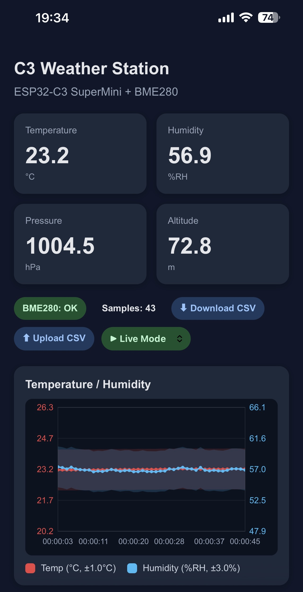
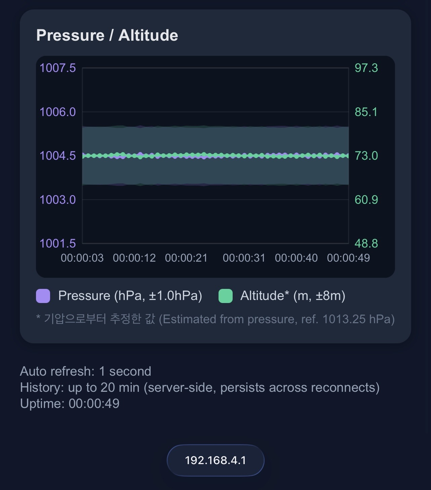

ESP32 Project - C3 SuperMini - ESP32 WiFi webserver
BME280으로 온도, 습도, 기압을 읽는 것까지는 됐는데, 시리얼 모니터는 컴퓨터에 연결된 상태에서만 볼 수 있습니다. 이번엔 ESP32를 WiFi 웹서버로 만들어서 스마트폰으로 실시간 데이터를 볼 수 있게 합니다.
지극히 개인적인 웹서버 스토리 📝
어렸을 적, 컴퓨터를 좋아했던 저는 언젠가 나만의 홈페이지를 만들어보고 싶다는 생각을 했습니다.
그 뒤 코딩과 멀어져 있다가, 얼마 전 파이썬에 입문하고 장고(Django)라는 것을 알게됩니다.
장고는 파이썬으로 웹페이지를 만들 수 있는 프레임워크(도구, 골격)였습니다!
개인 홈페이지를 만들기 위해서 파이썬, 장고 관련 서적과 IT 블로그들을 몇 달간 뒤졌습니다.
홈페이지를 만들려면 기본골격(프레임워크)뿐만 아니라 서버와 도메인도 필요했습니다.
그렇게 한땀한땀 만든 첫 홈페이지를 완성했던 날, 생각한 무언가를 만들어냈다는 큰 성취감을 맛보았습니다.
언젠가, 여러분도 그런 성취감을 맛보실 수 있으면 좋겠습니다.
그런데, ESP32도 WiFi가 있어 웹서버 역할을 할 수 있습니다. AI와 함께 바이브코딩을 해보면 너무 손쉽게 원하는 웹페이지를 만들어줍니다.
흔히 말하는 '딸깍'하면 만들어주는데, 제가 이전에 몇 달간 만들었던 것보다 더 잘 만듭니다.
AI에게 진 것 같아서 부끄럽고 화가 날 것 같다가, 이거 더 발전시키면 어떻게 될까, 궁금해집니다.
이제부터 보여드리겠습니다🜨
ESP32, 세상에서 가장 작은 서버가 되다. 🖥️
ESP32에는 WiFi가 내장되어 있고, 두 가지 모드로 동작합니다.
- Station 모드: 기존 공유기에 접속 (일반적인 WiFi 연결)
- AP 모드(Access Point): ESP32 자체가 공유기 역할 (WiFi 서버)
AP 모드로 설정하면 ESP32가 직접 WiFi 핫스팟을 만들고, 스마트폰으로 접속할 수 있습니다.
BME280 + WiFi 웹서버 코드 업로드
기존 bme280.ino 코드에 웹서버 기능을 전부 넣으면 금방 수백 줄이 됩니다. 역할을 분리해서 세 파일로 나눴습니다(🤖).
weather_station/
├── weather_station.ino ← BME280 센서 측정 + 메인 루프
├── web_ui.h ← 데이터 구조체 정의
└── web_ui.cpp ← 웹서버 + HTML/JS
weather_station.zip 파일을 다운로드 받아 압축을 풀고 아두이노 IDE에서 weather_station.ino 엽니다. 그럼 IDE에 위의 세 가지 파일이 모두 열립니다. 그 상태에서 업로드 해주세요.
주요 코드 보기(🤖)
AP 시작
const char* AP_SSID = "C3-Weather";
const char* AP_PASS = "12345678";
WiFi.mode(WIFI_AP);
WiFi.softAP(AP_SSID, AP_PASS);
접속 후 브라우저에서 http://192.168.4.1 을 열면 대시보드가 나옵니다. 이 IP는 ESP32 AP 모드의 기본 게이트웨이 주소입니다.
서버사이드 히스토리
브라우저가 새로 접속하거나 새로고침해도 이전 데이터가 사라지지 않도록, 측정값을 ESP32 메모리에 직접 쌓습니다.
#define HISTORY_SIZE 1200 // 1초 × 1200 = 20분
struct HistoryEntry { float temp; float humidity;
float pressure; float altitude; uint32_t ms; };
static HistoryEntry gHistory[HISTORY_SIZE];
링 버퍼 방식이라 가득 차면 가장 오래된 데이터부터 덮어씁니다. 연수 시작부터 끝까지 누적되고, 다른 스마트폰에서 접속해도 같은 그래프를 볼 수 있습니다.
BME280 측정 설정
bme.setSampling(
Adafruit_BME280::MODE_FORCED,
Adafruit_BME280::SAMPLING_X4, // 4회 평균
Adafruit_BME280::SAMPLING_X4,
Adafruit_BME280::SAMPLING_X4,
Adafruit_BME280::FILTER_OFF,
Adafruit_BME280::STANDBY_MS_1000
);
SAMPLING_X1은 한 번 측정해서 그대로 쓰고, SAMPLING_X4는 내부에서 4번 측정해 평균을 냅니다. 코드 한 줄 바꿔서 노이즈를 줄일 수 있다는 게 BME280의 장점입니다.
MODE_FORCED는 takeForcedMeasurement()를 호출할 때만 측정합니다. 그 사이에는 슬립 상태라 자기발열이 줄어들어 온도 측정값이 더 정확합니다.
web_ui.h에 정의한 WebSensorData 구조체가 두 파일을 연결합니다. 센서값을 여기에 채우면 웹서버가 알아서 JSON으로 내려줍니다.
struct WebSensorData {
float temp;
float humidity;
float pressure;
float altitude;
bool bmeOk;
uint32_t readCount;
uint32_t lastUpdateMs;
};
ESP32 웹서버 접속 방법
- 아두이노 IDE에서 업로드
- 시리얼 모니터 열기 (115200 baud)
- 부팅 완료 메시지 확인
AP SSID : C3-Weather
Password: 12345678
Web UI : http://192.168.4.1
- 스마트폰 WiFi에서
C3-Weather(password: 12345678)으로 연결 - 브라우저에서
http://192.168.4.1접속
인터넷 연결 안됨 경고
ESP32 AP에 연결하면 인터넷이 끊깁니다.
스마트폰이 "인터넷 없음"으로 경고를 띄울 수 있는데, 그래도 계속 연결을 유지하면 됩니다.
192.168.4.1 은 ESP32에 WiFi로 연결되었을 때만 작동하는 로컬 ip 주소입니다.
인터넷이 되는 상황에서 192.168.4.1 에는 접속할 수 없습니다.
짜잔~🎉 ESP32 기상관측 페이지에 접속하신 것을 환영합니다!!!
http://192.168.4.1 에 들어가면, 데이터 카드 4개(온도, 습도, 기압, 고도)와 그래프 2개(온도/습도, 기압/고도)가 실시간으로 측정되어 표시됩니다.


ESP32 기상관측 페이지 기능 설명
이중 Y축 그래프
온도는 20~30°C 범위, 습도는 40~80%RH 범위라 같은 축에 놓으면 변화가 잘 보이지 않습니다.
왼쪽 축(온도)과 오른쪽 축(습도)을 따로 두면 각각의 변화폭이 그래프 높이를 충분히 활용합니다.
기압/고도 그래프도 같은 방식입니다. 기압이 올라가면 고도 추정값은 내려가는 반비례 관계가 두 축에서 바로 보입니다.
Error Bands
그래프에 각 꺾은 선 주변에 반투명 밴드가 측정값의 오차범위를 나타냅니다.
(BME280 데이터시트 스펙 기준입니다.)
| 항목 | 오차 범위 |
|---|---|
| 온도 | ±1.0°C |
| 습도 | ±3.0%RH |
| 기압 | ±1.0hPa |
| 고도 | ±8m |
측정값이 이 범위 안에서 흔들리는 건 오류가 아니라 센서의 정밀도 한계입니다.
고도는 추정값
고도값은 직접 측정한 게 아닙니다. 기압을 해수면 표준기압(1013.25hPa)과 비교해서 계산한 추정치입니다. 현재 실제 기압이 표준과 다르면 고도 오차가 생깁니다.
CSV 다운로드 / 업로드
⬇ Download CSV 버튼을 누르면 지금까지 쌓인 전체 히스토리가 파일로 다운로드 됩니다.
uptime_ms,uptime,temp_C,humidity_pct,pressure_hPa,altitude_m
1000,00:00:01,22.14,61.52,1006.38,57.48
2000,00:00:02,22.15,61.50,1006.40,57.46
...
다운로드한 csv 파일은 ⬆ Upload CSV로 다시 올리면 그래프를 다시 그립니다.
모드 드롭다운이 자동으로 📂 CSV Mode로 전환되고, ▶ Live Mode로 바꾸기 전까지 실시간 갱신이 멈춥니다.
Vibe Making
이번 실습은 두 가지를 직접 만들어봅니다.
Vibe 1: 측정 간격 바꾸기
SAMPLE_INTERVAL_MS 값을 바꿔서 측정 주기를 조절해보세요. 빠르게 하면 그래프가 촘촘해지고, 느리게 하면 히스토리가 더 길어집니다.
힌트
현재 값은 1000ms(1초)입니다. 500으로 바꾸면 0.5초 간격이 되고, 히스토리 버퍼는 20분 → 10분으로 줄어듭니다. HISTORY_SIZE를 같이 늘리면 유지할 수 있습니다.
Vibe 2: AP 비밀번호 없애기
AP_PASS를 빈 문자열로 바꿔서 오픈 네트워크로 만들어보세요. AI에게 "AP 비밀번호를 없애려면 어떻게 바꿔야 해?"라고 물어보세요.
힌트
webUiBegin() 함수 안에 비밀번호 길이를 확인하는 분기가 있습니다. 비밀번호가 8자 미만이면 어떻게 동작하는지 코드를 읽어보세요.